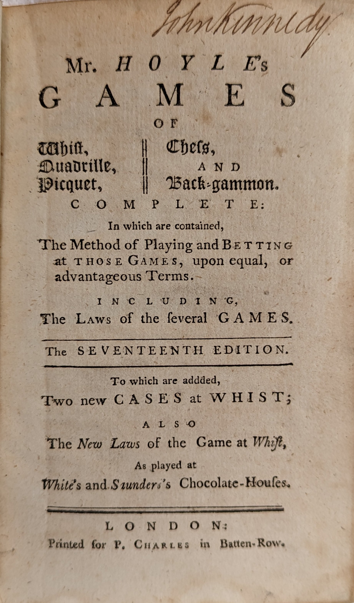

 |
Title: |
Mr. HOYLE's | GAMES | OF | [three lines to left of double rule] Whiſt, | Quadrille, | Picquet, | [three lines to right of double rule] Cheƒs, | AND | Back=gammon, | COMPLETE: | In which are contained, | The Method of Playing and Betting | at those Games, upon equal, or | advantageous Terms. | INCLUDING, | The Laws of the ſeveral GAMES. | [rule] | The SEVENTEENTH EDITION. | [rule] |
To which are added, | Two new CASES at WHIST; | ALSO | The New Laws of the Game at Whiſt, | As played at | White's and Saunders’s Chocolate-Houſes. | [reverse oxford rule] | LONDON: | Printed for P. Charles in Batten-Row. |
| Collation: |
12o: a6 B–D12 E12(−E12) F12(±F2) G–I12 K6 L1 [$½ (−B1,C6,D5,6,F6) signed; signing F4 as F5, F5 as F6]; 108 leaves, pp. [i–ii] iii–xii, [1–3] 4–90 [93–94] 95–117 [118–121] 122–124 [125] 126–152 [153] 154–166 [167–169] 170–206 [misprinting 67 as 76, 124 as 4, 205 as 206, 206 as 207] |
| Section Title Whist |
A SHORT | TREATISE | On the GAME of | WHIST. | CONTAINING | The LAWS
of the GAME: | AND ALSO, | Some Rules, whereby a Beginner may, with due | Attention to them, obtain to the
playing it well. | Calculations for thoſe who will bet the Odds | on any Points of the Score of the
Game then play-|ing and depending. | Cases ſtated, to ſhew what may be effected by a very | good Player in
critical Parts of the Game. | References to Cases, viz. at the End of the Rule, | you are directed how to find them. | Calculations, directing with moral Certainty, | how to play well any Hand or Game,
by ſhewing | the Chances of your Partner’s having 1, 2, or 3 | certain
Cards. | With Variety of Cases added in the Appendix. | [rule] | By EDMOND HOYLE, Gent. | [rule] | The
Laws of the Game, and an Explanation of the | Calculations, which are
neceſſary to be underſtood | by thoſe who would play it well. | AND ALSO | A Dictionary for WHIST, which reſolves almoſt | all the critcal Caſes that may
happen at the Game. | To which is added, | An ARTIFICIAL MEMORY: | Or, An eaſy Method of
aſſiſting the Memory of | thoſe that play at the Game of WHIST. |
| Section Title Quadrille |
[row of type orn] | A SHORT | TREATISE | On the GAME of | QUADRILLE;
| SHEWING, | The Odds of winning or loſing moſt Games | that are commonly played, either by calling a | King, or playing Sans Prendre. | To
which are added, | The LAWS of the GAME. | The Eight Edition. | By Edmond Hoyle, Gent. | [row of type orn] |
| Section Title Quadrille |
[row of type orn] | A SHORT | TREATISE | On the GAME of | QUADRILLE;
| SHEWING | The Odds of winning or loſing moſt Games that | are commonly played, either by calling a | King, or by playing Sans Prendre. | To which are added, | The LAWS of the GAME. | The Eight Edition. | By Edmond Hoyle, Gent. | [row of type orn] |
| Section Title Piquet and Chess |
[row of type orn] | A SHORT | TREATISE | On the GAME of | PIQUET; |
DIRECTING, | With moral Certainty, how to diſcard any Hand | to Advantage,
by ſhewing the Chances of | taking in any one, two, three, four, or five |
certain Cards. | Computations for thoſe who Bet their Money | at the Game. | ALSO | The LAWS of the GAME. | To which are added, | Some Rules and Observations for playing | well at CHESS. | The Eight Edition. | By Edmond Hoyle, Gent. | [row of type orn] |
| Section Title Backgammon |
[row of type orn] | A SHORT | TREATISE | On the GAME of |
BACK-GAMMON. | CONTAINING, | [15 lines to left of rule] A Table of the
thirty | ſix Chances, with Di|rections how to find | out the Odds of being |
hit, upon ſingle or | double Dice. | Rules whereby a Begin-|ner may, with
due | Attention to them, | attain playing it well. | The ſeveral Stages for |
carrying your Men | home, in order to loſe | no Point. | How to find out
who is | [14 lines to right of rule] forwardeſt to win a | Hit. | Caſes ſtated
for Back-|Games, with Di-|rections how to play | for one. | Caſes ſtated,
how to | know when you may | have the better of ſav-|ing a Gammon by |
running. | Variety of Caſes of Cu-|rioſity and Inſtruction. | The Laws of
the Game. | The Eighth Edition. | By Edmond Hoyle, Gent. | [row of type orn] |
| Contents: |
Signature (Page) Reference |
Contents |
Signature (Page) Reference |
Running Titles |
| a1r (i) |
title |
|
|
| a1v (ii) |
blank |
|
|
| a2r–a6v (iii–xii) |
‘[row of type orn] | CONTENTS. | [...]’ |
a2v–a6v (iv–xii) |
‘The CONTENTS.’ |
| B1r (1) |
section title Whist |
|
|
| B1v (2) |
blank |
|
|
| B2r–E9v (3–90) |
‘[row of type orn] | A SHORT | TREATISE | On the GAME of | WHIST. |
[...]’ |
B2v–E9r (4–89) |
‘A ſhort Treatise on | the Game of WHIST.’ |
|
|
on B6r (11), B7r (13), C8r (39), C12r (47), D8r (63), D9r (65), E4r (79), E6r (83) |
‘the Game of WHIST’ |
| E10r (93) |
section title Quadrille |
|
|
| E10v–F11r (94–117) |
‘[row of type orn] | A SHORT | TREATISE | On the GAME of |
QUADRILLE. | [...]’ |
E11r–F11r (95–117) |
‘A ſhort Treatise on | the Game of QUADRILLE.’ |
|
|
on F3r (101) |
‘the Game of WHIST.’ |
|
|
on F6r (107) |
‘the Game of QUADRILE’ |
| F11v (118) |
blank |
|
|
| F12r (119) |
section title Piquet |
|
|
| F12v (120) |
blank |
|
|
| G1r–H4v (121–152) |
‘[row of type orn] | A | TREATISE | On the GAME of | PIQUET. |
[...]’ |
G1v–H4v (122–152) |
‘A Treatise on PIQUET.’ |
|
|
on G1v (122), G3r (125), G4r (127), H2r (147) |
‘A Treatise on PIQUET’ |
| H5r–H11v (153–166) |
‘[row of type orn] | SOME | Rules and Observations | FOR | Playing well at CHESS. | [...]’ |
H5v–H11v (154–166) |
‘Rules and Observations | for Playing at CHESS.’ |
|
|
on H8r (159), H10r (163) |
‘for playing at CHESS.’ |
| H12r (167) |
blank |
|
|
| H12v (168) |
section title Backgammon |
|
|
| I1r–L1v (169–206) |
‘[row of type orn] | A SHORT | TREATISE | On the GAME of |
BACK-GAMMON. | [...]’ |
I1v–L1r (170–205) |
‘A ſhort Treatise on the | Game of BACK-GAMMON.’ |
|
|
on I6r (179), K3r (197) |
‘Game of BACK-AAMMON.’ |
|
|
L1v (206) |
‘A ſhort Treatise, &c.’ |